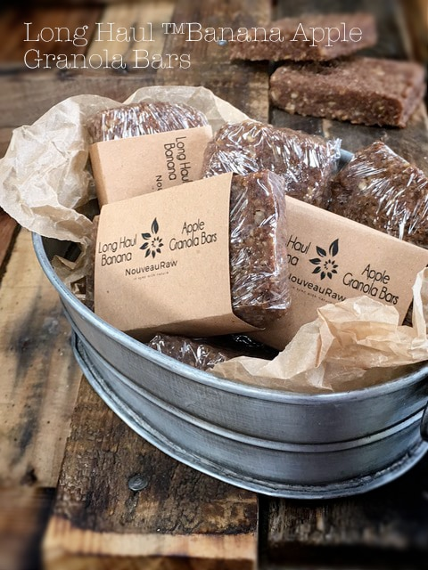
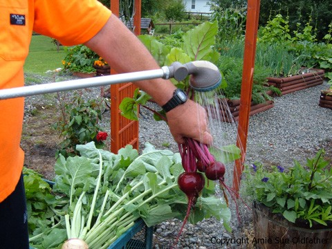

Long Haul Banana Apple Granola Bars
Long Haul Banana Apple Granola BarsToday, I made this bar especially for my dad, David. He came into my life when I was 12 years old, and for that, I am very blessed. My dad is a trucker, and if any of you are truckers or know someone who is, it is a hard and grueling job. A job that tends to keep them away from their families for extended periods of time, making it tough on all parties that are involved. Not only do they spend countless days away from home, their work can be quite dangerous.

raw / vegan / gluten-free
The long hours, the endless pavement that passes under their wheels can become hypnotizing, the sleepless nights can wear down their bodies, and the pure loneliness takes a real toll on them.
My dad is one of the hardest working men I know, and he does it in the name of supporting his family. I have always been so proud of my dad. He has missed birthdays, holidays, and family gatherings.
He never complains, yet I know it weighs heavy on his heart. In his life-long trucking career, he has hauled everything from cows to cows milk, cars, fish, oil, gas, and in Alaska, he was as an ice road trucker. I always shudder at that.
Right now, my dad is in the lower 48 hauling crude oil, and as it stands, he won’t be able to go home for Christmas. So, in my own little way of bringing home to him, I am making all sorts of wonderful foods that will keep him going on the road. One of his all-time raw favorites is the Trail Mix bar that I make.
A few other amazing things that you ought to know about my dad is that he has a miracle green thumb, and he is a gifted photographer. Oh, and a musician! OMGosh can he rock the house down with an electric guitar, or any instrument he touches. Never took lessons, self-taught. Pretty amazing man, don’t you think? I am blessed. So this recipe is for all you truckers on the road… for all you wonderful fathers who touch their children’s lives! I love you, dad.
I hope that you enjoy this recipe. Please comment below and have a blessed day. amie sue
yields: 20 bars (depending on size)
Dry Ingredients:
Wet Ingredients:
- 4 oz dried bananas, rehydrated in 1 cup hot water
- 1 medium apple, cored and rough chopped
- 6 large Medjool dates, pitted
- 1/2 cup of banana soak water
Hand mix:
Preparation:
- Take the 4 oz of dried bananas and rehydrate them with hot water. Allow them to soak while you prepare the next few steps.
- In a food processor fitted with the “S” blade, combine the oats, pecans, walnuts, apple spice, cinnamon, and salt. Pulse together until they all reach a small crumble.
- Make your own apple spice seasoning: 1/4 cup ground cinnamon, 1 tbsp ground allspice, 2 tsp ground nutmeg, 2 tsp ground ginger, 1/2 tsp ground cardamom (optional) Preparation: Combine all ingredients and blend well. Store in a small, airtight container.
- Remove the bananas from the soak water, placing them straight into the food processor. Don’t worry about shaking off all the water; the moisture from them will be needed.
- Add 1/2 cup of the banana soak water, apples, and dates to the machine and process until everything is mixed together well. It will be sticky. Transfer to a large bowl.
- Add 1 cup oats, the banana bits (diced dried banana), and raisins. I recommend at this point to remove any jewelry from your hands and dive in! Mix, squeeze and squish the dough together.
- Place the batter on the teflex sheet that comes with your dehydrator.
- I made mine about 3/4″ thick and shaped it into a square. Score the batter into desired sizes. I made 20 squares.
- Remove each bar from the teflex sheet and pat the bar together, cleaning up the edges and place it on the mesh sheet that comes with the dehydrator.
- Dry at 145 degrees for 1 hour, then reduce to 115 degrees for 6-8 hours or until desired dryness is achieved.
- Wrap each bar individually if you plan on using these for grab-and-go snacks. Or arrange them on a plate for your friends and family to enjoy. Store in the fridge to extend the shelf life.
The Institute of Culinary Ingredients™
- Dates are a fantastic ingredient for raw food recipes, click (here) to read why.
- Why do I specify Ceylon cinnamon? Click (here) to learn why.
- What is Himalayan pink salt, and does it matter? Click (here) to read more about it.
- Are oats gluten-free? Yes, read more about that (here).
- Are oats raw? Yes, they can be found. Click (here) to learn more.
- Do I need to soak and dehydrate oats? Not required but recommended. Click (here) to see why.
Culinary Explanations:
- Why do I start the dehydrator at 145 degrees (F)? Click (here) to learn the reason behind this.
- When working with fresh ingredients, it is essential to taste test as you build a recipe. Learn why (here).
- Don’t own a dehydrator? Learn how to use your oven (here). I do, however honestly believe that it is a worthwhile investment. Click (here) to learn what I use.
My dad’s green thumb at work!

© AmieSue.com